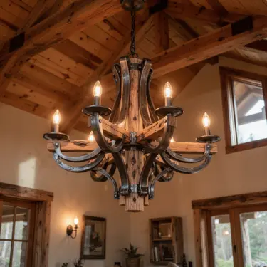
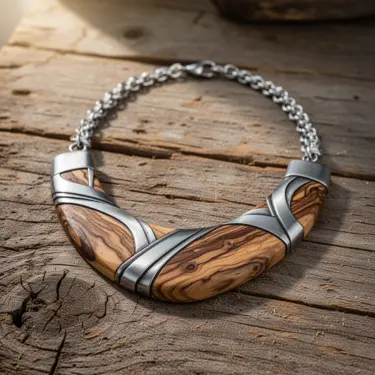
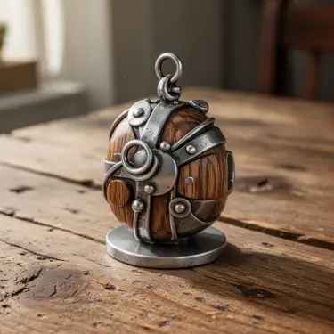
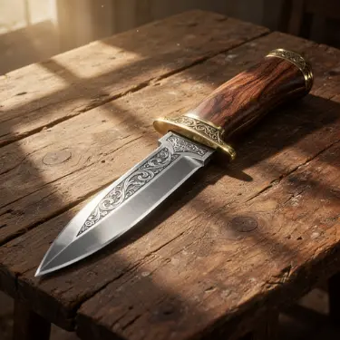
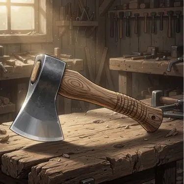
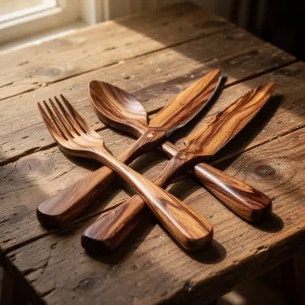

Ljuskrona i trä och stål
Handgjord ljuskrona i stål och trä med rustik design.
Ett dekorativt smide som passar både moderna och traditionella hem.
Pris: 1500kr

Since 1987
Upptäck våra handgjorda smidesprodukter online eller i vår butik i centrala Göteborg.
I vår smedja skapar vi unika produkter i stål och trä, såsom halsband, amuletter och ljuskronor, men även andra unika föremål. Varje produkt är noggrant smidd och har en tidlös design.

Handgjord ljuskrona i stål och trä med rustik design.
Ett dekorativt smide som passar både moderna och traditionella hem.
Pris: 1500kr

Ett handgjort halsband i stål och trä.
Smycket kombinerar enkel design med traditionellt hantverk och naturliga material.
Pris: 599kr

Rund amulett i stål och trä med dekorativa detaljer.
Ett unikt smycke inspirerat av klassiskt smideshantverk gjort av återbrukat material.
Pris: 399kr

Handsmidd dolk med blad i stål och skaft i trä.
Inristningarna på bladet inspireras av traditionellt smideshantverk och ger dolken en klassisk och robust design.
Pris: 399kr

Handsmidd yxa med stålblad och träskaft.
Ett hållbart verktyg med fokus på kvalitet och traditionellt smide.
Pris: 499kr

Handgjorda bestick i trä med enkel och naturlig form.
Varje del är unik och tillverkad med omsorg om material och detaljer.
Pris: 249kr